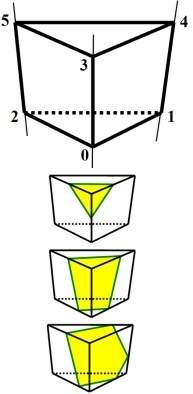
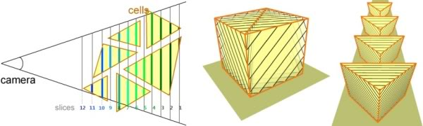

Objects are represented as a volume textures, the volume textures are created in a MIP hierarchy for level of detail. The resulting textures can be surprisingly small; the Eiffel Tower model shown here is voxelized at 128x128x256, and takes up 4.8MB of compressed texture memory. Applying the techniques from Vidal, Mei, and Decaudin 2008, a further 75% reduction on this model is claimed. The MIP chain associated with each volume model allows the hardware to interpolate smoothly between different levels of detail. This can be observed in the video.
Rendering a scene proceeds as follows: A scene containing such primitives is sorted on the CPU from far to near, and a series of slices parallel to the camera is intersected with the primitives. Starting in the distance, a series of polygons are generated. These are the intersection of each volume primitive with the slice, mapped into each object’s volume textures. As can be seen in the diagram below, these polygons will have 3, 4, or 5 sides. A nicety of this approach is that slices can be spaced according to visible resolution; the stepping is in projected screen space.


These slices are submitted to the GPU per slice, rather than per object, and thus the usual problems with interleaved transparent object rendering are avoided; all objects, including translucent and transparent objects, will inter-sort properly. A potential drawback of this method is that there might not be enough GPU memory to hold all the volume textures in a slice, or that the volume textures will thrash through memory as rendering progresses. A mitigation would be to take the proposed algorithm one step further, and partition slices according to horizontal overlap in order to schedule volume textures across the bus more efficiently. These ideas have been gestating for a little while: A similar rendering technique has been described by Kevin Boulanger for rendering grass, as previously described here. An extruded patch describes grass volumes, and in a step similar to Volumetric Billboards, middle distance grass is rendered as slices through that volume. Volumetric Billboards were also preceded by previous work by the same authors in rendering forests. A terrain is extruded into prisms, and volume cell containing a voxel image of a tree encoded in a volume texture is ray-traced. This method was suitable for distant, or fly-over views, but didn’t generalize the rendering problem. The Volumetric Billboards algorithm can also deal with this sort of representation, as can be seen in the animated grass in the video. As described, the technique has most lighting information baked in. One can imagine that the technique can be extended to incorporate information to allow for dynamic relighting. It would also probably be useful to be able to switch between polygonal and voxel representations on the fly as the camera gets close to an object. Dynamic objects subject to more than just affine transformation could also be interesting. References: Ph. Decaudin, F. Neyret. Volumetric Billboards. Computer Graphics Forum, Volume 28, 2009. V. Vidal, X. Mei, Ph. Decaudin. Simple Empty-Space Removal for Interactive Volume Rendering. Journal of Graphics Tools, Volume 13 (2), p 21-–36, 2008